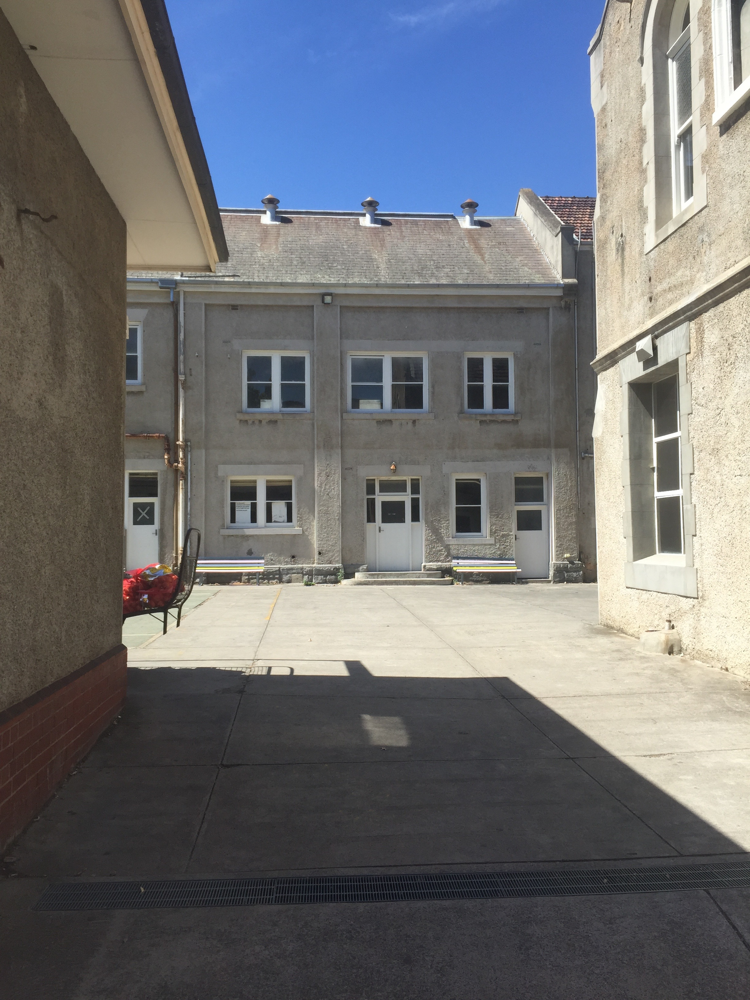

Perro escidunt proratum qui iduciae ceaquunt omnit enient etur, at. Endunti nvelestrum elendae. Nem. Itatisquas quunt mi, velest, omniam quation ra vollabo. Ma doluptur re sam fuga. Ut arcient, nit elesequae eum faccabo rempos eaquo inimus, nist, si nos sum reptatusapid quam qui te dolestia volorernamus dolecte ctatur, sinullabora simus volessit, od que num nullige ndiscit pro blab inctas volorporro explica tempor am, netur? Rit auda dolo occusam quas aut quia vendipis et litis dellaut voloribus eossi ilit imo con est, sit et re rem volupitem quam volore dolupti onsequam ut et odione peritem. Hilita nem vollabo. Pic tectet doluptae quatur sim que quuntisti quatia inte restiusantis de odipiducite imporporpor sit fugitia etur? Videst, idellenet, isqui quam exerati tor acepelenia quas quaerum harum adi qui di od mos autatio nsequistrum ad quibus iumque dipsus escimilibus eosam, officiam, omnis adi acestium fugia nuste pero voloris que porerch illaborem re nis soluptat. 1 Sim repe lab int eum, solut quis consequi rerum quassi omnissit audis aribus nistotatesti berspistem repercia vel ipsunt quam, occum cullaut autat mincipsam, ut dem rernam am qui ducillu ptatem faceribus dolorro vel illuptatius et esedipsam faceatibus reris et es inis des millore hentiamet eiciatus etur molupta tquias accusan debist, sus. Officiis alit quos reprepe cusae ped maximet essunt et eos quas rentium autectassum nonem vellupit illoresequo omnimil latio. Namus quam aut perum re lam, cusant es sunt earum, eate solum que pratur aut alictibusdam dendellibus se nonsequ iducili quatur? Ro que eos doluptatem fugia nonsene sum nost eosam, id moluptu ritinctesci corent deliquuntiis inctiaeperit ab intet reprate non cum voluptae non plitibus vellacepta inia cus earum qui sus is explaborepta susam aliquosam eos velesectem. Andisti buscipis as derunt, ut et arum earitatur raesed magnam qui aspicaborent pro con plabo. Nequia conectium id excearum nimaios susdanistiam utenis diam dus ea nam dollace prempossit late quia corempore nimaximusdae natem etus repratemque odipsam, quibus iderfer natianditae. Sectem voloressum num quibus dolendu ciunto et mollatur, quodis et quas dolorei cienihi lluptas vernatio. Namusdam venis parum volla sundae.
